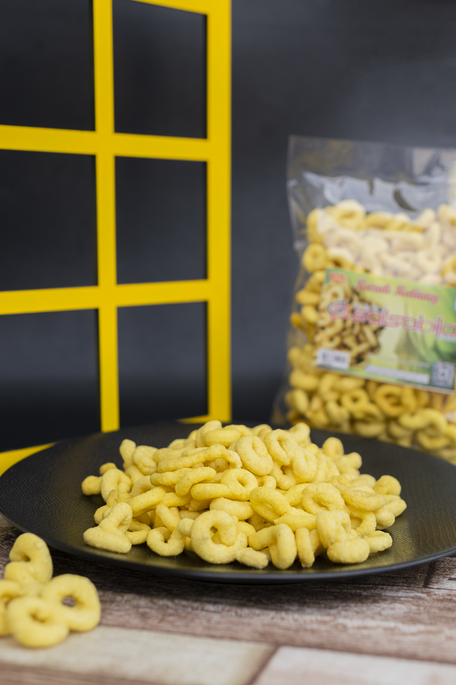
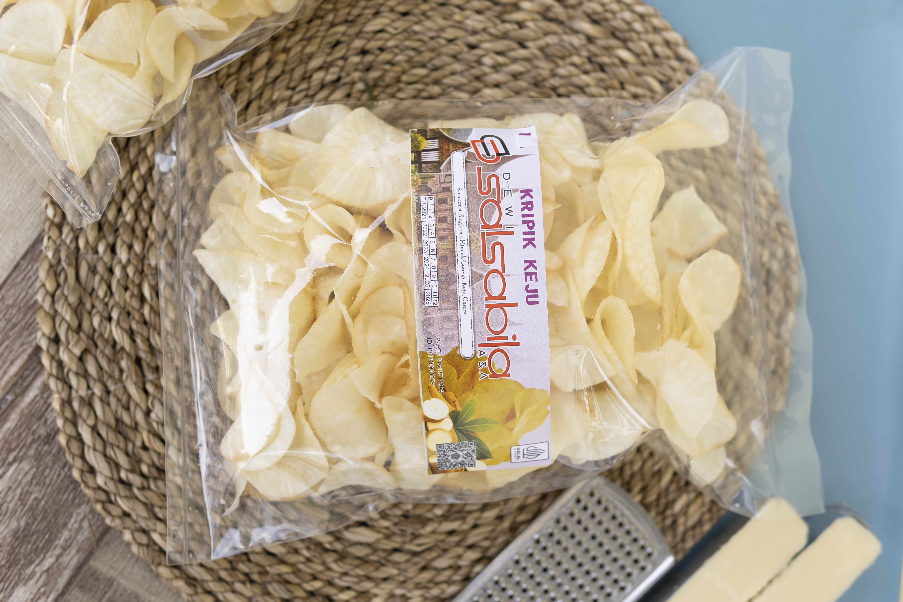
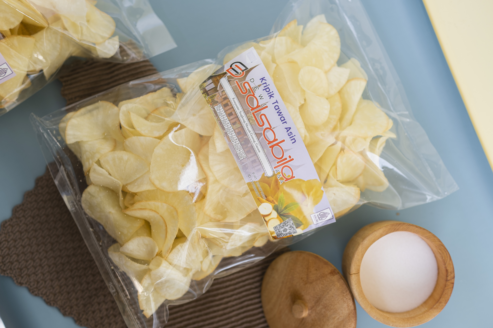

Galeri Salsabila
Rasa yang
terlihat nyata.
Intip lebih dekat produk, bahan, dan momen yang menjadi bagian dari perjalanan Salsabila.





Intip lebih dekat produk, bahan, dan momen yang menjadi bagian dari perjalanan Salsabila.


